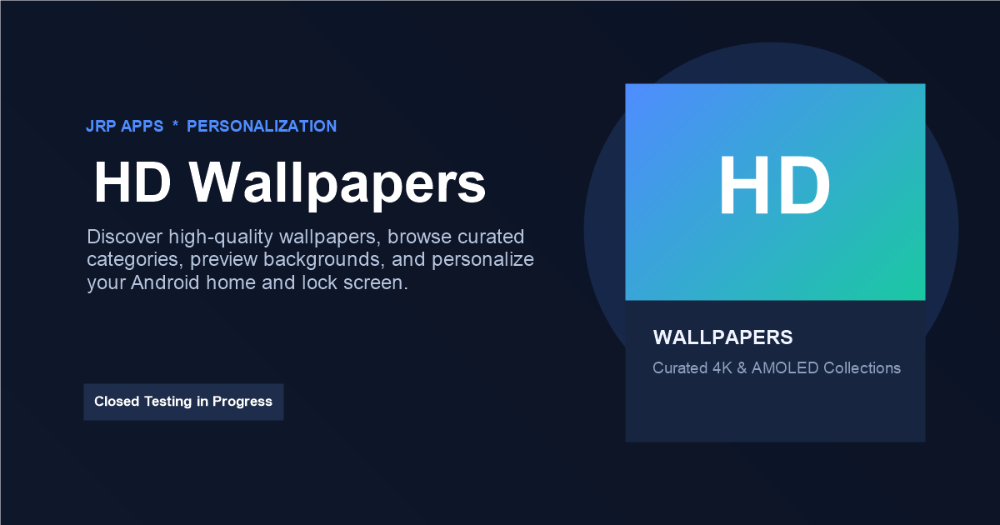

Discover beautiful, high-quality wallpapers, explore curated categories, preview images and download favourites for a fresh Android home or lock screen.
HD Wallpapers is designed for people who want a simple way to discover attractive backgrounds for their Android devices without navigating cluttered galleries or complicated editing tools. Users can browse a growing collection of wallpapers, open a full preview and quickly choose an image that suits their home screen, lock screen or personal style.
The experience focuses on discovery and convenience. Wallpapers can be organised into categories so users can move between different themes, styles and visual moods. A focused preview view makes it easier to inspect an image before downloading it, while favourites help keep preferred wallpapers easy to revisit.
Downloaded wallpapers are treated as user content rather than disposable application cache. Temporary thumbnails, previews and network files remain separate from persistent downloads so routine cache management does not remove wallpapers the user intentionally saved.
Features and Why They Matter
High-quality wallpaper browsing. Explore visually rich wallpapers prepared for modern Android displays, with an interface designed to keep the images themselves at the centre of the experience.
Curated categories. Browse wallpapers by category instead of searching through one large undifferentiated feed. Categories make it quicker to find styles that match a user's current mood or device setup.
Full wallpaper preview. Open an image in a focused preview before downloading. Navigation controls make it easy to move through neighbouring wallpapers without repeatedly returning to the gallery.
Favourites. Save wallpapers to a favourites collection for quick access later. This is useful when users want to compare several images before choosing one for their phone.
Persistent downloads. Successfully downloaded wallpapers are kept separate from temporary cache data. Downloaded content remains available through the app's Downloads experience instead of being treated as disposable thumbnails.
Download history. Each successful download can be represented in Downloads so users have a clearer record of images they saved, including repeat downloads where applicable.
Fast image delivery. Online image optimisation and delivery help reduce unnecessary transfer while keeping previews responsive across supported devices and network conditions.
Simple Android experience. The interface is designed around familiar navigation, image-first layouts and direct actions so users can move from discovery to preview and download with minimal friction.
Who Should Use It
HD Wallpapers is intended for Android users who enjoy changing the look of their phone and want an easy way to discover attractive backgrounds. It suits people who prefer browsing visual collections instead of searching the web manually, as well as users who like keeping a personal shortlist of favourites.
The app can also be useful for people who change wallpapers frequently and want a straightforward Downloads history showing images they previously saved. The goal is to keep the experience focused: browse, preview, favourite and download.
Privacy and Data Handling
HD Wallpapers is designed to collect only the information needed to operate its features and connected services. Browsing and download activity should not require users to publish a public profile simply to use wallpapers.
The app may use internet connectivity for online wallpaper content, advertising, support links, analytics or related connected functionality. Any profile information requested during onboarding, such as a name or date of birth, should remain optional where the app provides a Skip option and should be handled according to the published privacy policy.
Downloaded wallpaper files and local download-history references are treated as persistent user content. Temporary image thumbnails, previews and network cache data are kept conceptually separate so normal cache cleanup does not remove content the user intentionally downloaded.
For complete information about data handling, advertising and connected services, read the HD Wallpapers privacy policy.
Fast, Image-Focused Performance
Wallpaper apps depend heavily on image loading, so HD Wallpapers is designed to avoid unnecessary work while users browse. Optimised image delivery, lazy loading and reusable previews can help galleries remain responsive while reducing avoidable bandwidth consumption.
The interface keeps actions close to the image being viewed, with direct access to favourite and download controls. Navigation between nearby wallpapers is intended to feel immediate so users can compare several images without breaking the browsing flow.
Downloads and Offline Access
Online connectivity is required to discover wallpapers that have not already been downloaded. Once a wallpaper has been successfully saved to persistent device storage, the saved copy is intended to remain available independently of temporary image cache cleanup.
The Downloads section can keep a record of successful downloads, helping users revisit previously saved images. Multiple successful downloads may be represented separately when download history is intended to reflect actual download activity.
Advertising
HD Wallpapers may display advertisements to support continued development and operation of the service. Advertising can require internet access and may involve third-party advertising services as described in the app's privacy policy.
The app experience should keep advertising separate from the core wallpaper controls so users can clearly distinguish content, navigation and download actions from sponsored placements.
App Preview

Promotional preview for HD Wallpapers by JRP Apps, showing a modern Android wallpaper browsing experience.
Frequently Asked Questions
What is HD Wallpapers?
HD Wallpapers is an Android personalization app for discovering, previewing, saving and downloading high-quality wallpapers across curated categories.
Can I download wallpapers to my phone?
Yes. Wallpapers can be downloaded for personal use on the device, subject to Android storage permissions and the availability of the selected image.
Can I save wallpapers as favourites?
Yes. Users can keep a favourites collection so preferred wallpapers can be found again quickly.
Does HD Wallpapers keep a download history?
The app can maintain a local Downloads history so users can review wallpapers they previously downloaded.
What happens if I download the same wallpaper more than once?
Where download history is configured to represent each successful download, repeated downloads can appear as separate history entries with their associated download time.
Are downloaded wallpapers deleted when temporary cache is cleared?
No. Successfully downloaded wallpapers are intended to be treated as persistent user content and kept separate from temporary preview, thumbnail and network cache files.
Does HD Wallpapers contain advertising?
Yes, the app may display advertising. Internet access can be required for advertisements, online wallpaper content and other connected services.
Does the app require an account?
Core wallpaper browsing is designed to remain straightforward without requiring a public profile. Where optional profile details are offered during onboarding, users may be able to skip them.
Where can I read the privacy policy?
The HD Wallpapers privacy policy is available on the JRP Apps website.
Related Apps and Games
Explore other JRP Apps products for everyday tools, personal organisation and relaxing entertainment.
Calculator Pro
A modern calculator for everyday arithmetic and scientific work.
Benefit: check totals, percentages and formulas quickly.